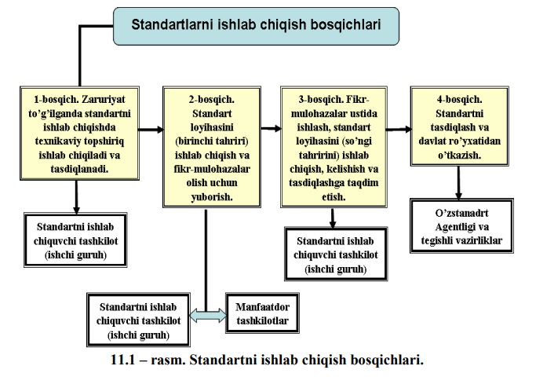

<!DOCTYPE html>
<html lang="en">

<head>
    <meta charset="UTF-8">
    <meta http-equiv="X-UA-Compatible" content="IE=edge">
    <meta name="viewport" content="width=device-width, initial-scale=1.0">
    <link rel="stylesheet" href="../assets/font-awesome-4.7.0/css/font-awesome.min.css">
    <link rel="stylesheet" href="https://maxcdn.bootstrapcdn.com/bootstrap/4.0.0/css/bootstrap.min.css"
        integrity="sha384-Gn5384xqQ1aoWXA+058RXPxPg6fy4IWvTNh0E263XmFcJlSAwiGgFAW/dAiS6JXm" crossorigin="anonymous">
    <link rel="stylesheet" href="https://stackpath.bootstrapcdn.com/bootstrap/4.3.1/css/bootstrap.min.css">

    <link rel="stylesheet" href="https://maxcdn.bootstrapcdn.com/font-awesome/4.7.0/css/font-awesome.min.css">
    <title>Document</title>
    <style>
        .card {
            box-shadow: 0 8px 16px 0 rgba(0, 0, 0, 0.2), 0 6px 20px 0 rgba(0, 0, 0, 0.19);
        }
    </style>


</head>

<body><br>
    <nav style="background-image: url(./../bluu.png);" class="navbar fixed-top navbar-expand-lg navbar-light bg-light">
        <a href="./../maruza.html"><i style="color: white;" class="fa fa-arrow-left"></i></a>
        <button class="navbar-toggler" type="button" data-toggle="collapse" data-target="#navbarTogglerDemo03"
            aria-controls="navbarTogglerDemo03" aria-expanded="false" aria-label="Toggle navigation">
            <span class="navbar-toggler-icon"></span>
        </button>
        <a style="text-align: center;" class="navbar-brand" href="#">
            <div class="badge badge-primary text-wrap" style="width: 242px; border-radius: 30px;">
                Metrologiya / 11-ma`ruza
            </div>

            <div class="collapse navbar-collapse" id="navbarTogglerDemo03">
                <ul class="navbar-nav mr-auto mt-0 mt-lg-0">

                    <li class="nav-item">
                        <a class="nav-link" href="http://library.ziyonet.uz/ru/book/103802"><i style="color: white;"
                                class="fa fa-globe">
                                <span style="color: white;">Mavzuni internetdan ko`rish</i> <span
                                class="sr-only">(current)</span></a>
                    </li>

                </ul>
                <form class="form-inline my-2 my-lg-0">
                    <input class="form-control mr-sm-2" type="search" placeholder="Qidiruv...." aria-label="Search">
                    <button class="btn btn-outline-success my-2 my-sm-0" type="submit"><span
                            style="color: white;">Qidiruv</span></button>
                </form>
            </div>
    </nav>

    <!-- tepaga chiqish tugmasi -->
    <button onclick="topFunction()" style="position: fixed;z-index: 1000;bottom: 20px;right: 20px;display: none;"
        id="topBtn" type="button" class="btn btn-primary">
        <i class="fa fa-arrow-up" aria-hidden="true"></i>
    </button>
    <script src="./../../top.js"></script>

    <div class="card" style="width: 21rem;margin: auto;margin-top: 40px;">
        <div class="card-body">
            <h5 style="margin-left: 35px;" class="card-title">Standartlarni yaratish va tadbiq etish

            </h5>
            <br>
            <p class="card-text"><b><br> Reja:<br>
                    <br><br>11.1. Standartlarni ishlab chiqish tartib – qoidalari
                    <br> 11.2. Tarmoq standartlarini ishlab chiqish
                    <br> 11.3. Korxonalarning standartlarini ishlab chiqish
            </p><br></b>
            <p>O‘zRST 1.1 – 92 “O‘zbekiston Respublikasining standartlashtirish davlat tizimi.
                O‘zbekiston Respublikasining standartini ishlab chiqish, kelishib olish, tasdiqlash va
                ro‘yxatdan o‘tkazish tartibi” standartiga binoan O‘zbekiston Respublikasi standarti
                (bundan keyin standart deb yuritiladi) standartlashtirish bo‘yicha texnikaviy qo‘mita
                (TQ) lar, standartlashtirish bo‘yicha tayanch tashkilotlar, vazirliklar, idoralar,
                uyushmalar, konsernlar, davlat korxonalari, aksioner va qo‘shma korxonalar,
                muassasalar va tashkilotlar tomonidan ishlab chiqiladi.
                <br> Standartni har xil tashkilotlar mutaxassislarining ishchi guruhlari tomoni-dan
                ishlab chiqishga yo‘l qo‘yiladi. Standart bir nechta tashkilot hamkorligida ishlab
                chiqilayotgan bo‘lsa, u holda yetakchi ishlab chiquvchi tashkilotlar (ijrochilar
                ro‘yxatida birinchi o‘rinda turadi) hamkorlikda ish bajaruvchi har bir tashkilot bilan
                ish kulamini va muddatlarini aniqlaydi. Yetakchi ishlab chiquvchi tashkilot butunlay
                standart loyihasini o‘z vaqtida ishlab chiqishga, hankor tashkilotlar esa o‘zlariga
                topshirilgan ishlarning o‘z vaqtida bajarilishiga javobgar hisoblanadilar.
                <br> Standart loyihasining mazmuni va texnik-iqtisodiy jihatdan asoslab berilganligi,
                ko‘rsatkichlarning, me’yorlarning, talablarning fan va texnika hozirgi darajasiga
                to‘g‘ri kelishiga standartni ishlab chiquvbchi va uni tasdiqlovchi tashkilot javobgar
                hisoblanadi.
                <br> Standart respublika hududida kimga qarashli ekanligi va mulk shaklidan qat’iy
                nazar, mahsulotlarni chiqaradigan va iste’mol qiladigan hamma korxona va tashkilotlar
                uchun majburiydir.
                <br> Mavjud har bir standartga kiritilgan o‘zgarish asosiy standart uchun belgilangan
                tartibda majburiy kelishib olinishi, tasdiqlanishi va ro‘yxatdan o‘tkazilishi lozim.
                <br> Umimy standartlarning tuzilishi, mazmuni, bayon etilishi va rasmiylashtirilishi O‘zDSt
                1.5-99 standartiga muvofiq bajariladi.
                <br><b> Standartlarni ishlab chiqish tartibi. </b>Standartni ishlab chiqishda tashkiliy – usuliy
                birlikka erishish maqsadida hamda standartni ishlab chiqish bosqichlari bajarilishini
                nazorat qilish uchun 4 bosqich joriy etiladi (11.1 – rasm).

            </p>

        </div>
    </div>

    <div class="card" style="width: 21rem;margin: auto;margin-top: 40px;">
        <div class="card-body">
            <h5 style="margin-left: 20px;" class="card-title">Metrologiyaning rivojlanish tarixiga oid ma’lumotlar</h5>
            <br>
            <p class="card-text">
                Standart loyihasi TQ ish rejasiga, tasdiqlangan standartlashtirish jadvaliga, yangi
                mahsulot turlarini yaratish rejasiga, manfaatdor tashkilotlar taklifi va ishlab chiquvchi
                korxonalarning tashabbusiga binoan ishlab chiqiladi.
                Standartlarni ishlab chiqish bosqichlarini bir – biri bilan qo‘shib olib borishga yo‘l
                qo‘yiladi.
                
                <br><b> 1-bosqich.</b> Texnik topshiriq me’yoriy hujjatni ishlab chiqish ishlarini bajarish
                bosqichlarini o‘rnatish maqsadida buyurtmachi-tashkilot bilan kelishilgan holda,
                ishlab chiquvchi tashkilot tomonidan tuziladi va odatda quyidagilarni o‘z ichiga oladi:
                <br> – standartlaatirish obyekti va qo‘llanish sohasi;
                <br>– standartning bo‘limlari va standartda o‘rnatiladigan asosiy talablar ro‘yxati;
                <br>– standartni ishlab chiqish bosqichlari;
                <br>– standart bilan birga taqdim etiladigan hujjatlar ro‘yxati;
                <br>– standart loyihasini kelishish lozim bo‘lgan boshqaruv idoralari va (yoki)
                korxonalar ro‘yxati;
                <br>– buyurtmachining boshqa talablari.
                <br><b> 2 – bosqich. </b>Standart loyihasi manfaatdor tashkilotlarning takliflari asosida va
                (yoki) tayyorlovchi - korxonalarning tashabbusi bilan ishlab chiqiladi.

                <br> Standartning loyihasini ishlab chiqish bilan bir vaqtda standart loyihasiga
                tushuntirish yozuvi tuziladi va zarur bo‘lganda, standartni joriy etish bo‘yicha asosiy
                tashkiliy-texnikaviy tadbirlar rejasining loyihasi ishlab chiqiladi. Standart loyihasi
                tushuntirish yozuvi bilan birga va asosiy tadbirlar rejasining loyihasi bilan nusxasi
                ko‘paytiriladi, so‘ng fikr-mulohazalar olish uchun ro‘yxat bo‘yicha manfaatdor
                tashkilotlarga yuboriladi.
                <br>Manfaatdor tashkilotlarga quyidagilar kiradi:
                <br>1) buyurtmachi-tashkilot (asosiy iste’molchi)ga yoki uning standart loyihasini
                kelishish bo‘yicha tayanch qilib tayinlangan tashkilotlaridan biri;
                <br>2) davlat nazorat bo‘limiga, kasaba uyushmasi tashkilotiga transport, sog‘liqni
                saqlash vazirliklari, atrof-muhitni muhofaza qilish qo‘mitasi, agar standart loyihasida
                ularning vakolatiga tegishli shartlar qo‘yilgan bo‘lsa;
                <br>3) biriktirilgan mahsulot yoki faoliyat yuzasidan standartlashtirish bo‘yicha
                tayanch tashkilotlar (agar ular standart loyihasining ishlab chiqaruvchisi bo‘lmasa);
                <br>4) standartlarni joriy qiladigan va joriy qilishni ta’minlaydigan tashkilot va
                korxonalar;
                <br>5) standart loyihasining ishlab chiqilishi bilan bog‘liq ravishda qayta ko‘rib
                chiqish, o‘zgartirish, bekor qilish lozim topilgan taqdirda bir-biri bilan bog‘liq bo‘lgan
                amaldagi me’yoriy hujjatni tasdiqlagan tashkilotlar.
                <br>Korxona va tashkilotlar taqdim etilgan standart loyihasini ko‘rib chiqib, o‘z fikrmulohazalarini
                yozadi
                va standartni ishlab chiquvchiga, standart loyihasini olgan
                kundan boshlab 15 kundan kechiktirmay jo‘natishlari lozim.
                <br><em> Tushuntirish yozuvi.</em> Standart loyihasini ishlab chiqish bilan bir vaqtda standart
                loyiqsiga tushuntirish yozuvi tuziladi. Tushuntirish yozuvining nomida standartning
                darajasi va to‘liq nomi, standart loyihasi tahririning tartib raqami va (yoki) standartni
                ishlab chiqish bosqichi to‘g‘risida ma’lumot keltiriladi.
                <br> Misol:
            <div style="text-align: center;"><br><b> Tushuntirish yozuvi</b></div>
            <br>O‘zbekiston davlat standartining loyihasi _____________________ ga
            (standart nomi)
            (fikr olishga tarqatiladigan birinchi tahriri).
            <br>Standart loyihasiga tushuntirish yozuvining bo‘limlari quyidagi navbatda
            joylashtiriladi:
            <br>1) standartni ishlab chiqishga asos;
            <br>2) standartni ishlab chiqish maqsadlari va vazifalari;
            <br>3) standartlashtirish obyektining tafsiloti;
            <br>4) standartning ilmiy-texnikaviy darajasi;
            <br>5) standartni joriy etishdan olinadigan texnik-iqtisodiy samaradorlik;
            <br>6) joriy etish, standartni amalga kiritish (amal muddati) va standarni tekshirish;
            <br>7) boshqa me’yoriy hujjatlar bilan o‘zaro bog‘liqligi;
            <br>8) fikr-mulohazalar uchun jo‘natilganligi to‘g‘risida ma’lumot standartning
            birinchi tahriridan boshqa barcha tahrirlariga fikr olish uchun jo‘natilganligi to‘g‘risida
            ma’lumot;
            <br>9) standart loyihasining tasdiqlashga taqdim etiladigan faqat oxirgi tahririga oid
            kelishilganlik to‘g‘risida ma’lumot;
            <br>10) axborot manbalari;
            <br>11) qo‘shimcha ma’lumotlar.
            <br>Tushuntirish yozuvi standart loyihasining har bir tahririga tuziladi, tushuntirish
            yozuvida standart loyihasiga birinchi tahrirga nisbatan kiritilgan asosiy ko‘rsatkichlar,
            me’yorlar, tafsilotlar, talablardagi o‘zgartirishlar aks ettiriladi va o‘zgartirishlarni
            texnik-iqtisodiy asoslash keltiriladi.
            <br>“Standartni ishlab chiqishga asos” bo‘limida standartning qanday manbaga
            asosan ishlab chiqilishi ko‘rsatiladi.
            <br>“Standartni ishlab chiqish maqsadlari va vazifalari” bo‘limida ishlab
            chiqiladigan standartni qo‘llanishi natijasida erishiladigan oxirgi natijalar va standartni
            ishlab chiqishda hal etiladigan masalalar keltiriladi.
            <br>“Standartlashtirish obyektining tafsiloti” bo‘limida standartning birinchi marta
            ishlab chiqilayotgani to‘g‘risida ma’lumot yoki standart loyihasini ishlab chiqish
            boshlanishida amal qilinayotgan standartlar, texnik shartlar va boshqa hujjatlar
            to‘g‘risidagi ma’lumotlar va ularning maqbulligini texnik-iqgisodiy asoslash
            keltiriladi.
            <br>“Standartning ilmiy-texnikaviy darajasi” bo‘limida standartning ilmiytexnikaviy darajasini baholash
            natijalari va uning jahon darajasidagi talablarga
            muvofiqligi keltiriladi; qanday xorijiy o‘xshash standartlarga moslanganligi va ular
            to‘g‘risidagi ma’lumotlar keltiriladi.
            <br> “Standartni joriy etishdan olinadigan texnik-iqtisodiy samaradorlik” bo‘limida
            standartlashtirish obyektining iqtisodiy afzalliklari, tejash (tejamni olish) asosiy
            manbalari va uning moddiy va pul hisobidagi qiymati yoki ijtimoiy samarasi keltiriladi.
            <br>“Joriy etish, standartni amalga kiritish (amal muddati) va standartni tekshirish”
            bo‘limida quyidagilar ko‘rsatiladi:
            <br>1) standartni amalga kiritish sanasini asosiy tadbirlar rejasini bajarishga vaqtni
            hisobga olgan holda asoslash;
            <br>2) standartning amal muddatini cheklamasdan tasdiqlashni asoslash yoki
            standartning amal qilinishini cheklash mo‘ljallangan muddatini asoslash, shuningdek
            standartni birinchi tekshirish va navbatdagi tekshirishlar muddatini asoslash.
            <br>“Fikr-mulohazalar uchun jo‘natilganligi to‘g‘risida ma’lumotlar” bo‘limida
            quyidagilar keltiriladi:
            <br>1) standart loyihasi fikr olish uchun jo‘natilgan tashkilotlar (korxonalar) soni;
            <br>2) fikrlarini yuborgan tashkilotlar korxonalar soni;
            <br>3) fikrlarni ko‘rib chiqish natijalari (jamlangan fikrlarni).
            <br><b> 3-bosqich.</b> Standart loyihasini ishlab chiquvchi-yetakchi tashkilot standart
            loyihasi bo‘yicha olingan fikr-mulohazalar asosida fikr-mulohazalar to‘g‘risida
            ma’lumot tuzadi.
            <br>Standart loyihasini ishlab chiquvchi-yetakchi va hamkor bajaruvchi tashkilotlar
            olingan fikr-mulohazalar asosida standart loyihasining oxirgi tahririni ishlab
            chiqadilar, shuningdek tushuntirish yozuviga va asosiy tadbirlar rejasining loyihasiga
            aniqlik kiritadilar.
            <br>Ishlab chiquvchi-tashkilot va boshqa manfaatdor tashkilotlar o‘rtasida standart
            loyihasi bo‘yicha kelishmovchilik bor bo‘lsa, ishlab chiquvchi tashkilot
            kelishmovchiliklarni ko‘rib chiqish bo‘yicha asosiy manfzatdor tashkilotlar
            vakillarining, shu jumladan standartning ko‘rilayotgan loyihasi bo‘yicha qaror qabul
            qilishga vakolatlangan buyurtmachilar (asosiy iste’molchilar)ning vakillari ishtirokida
            kelishuv majlisini (kengashini) o‘tkazadi.
            <br>Yetakchi ishlab chiquvchi tashkilot kengash qatnashchilariga munozarali
            masalalar bo‘yicha fikr – mulohazalar majmuidan ko‘chirmalar yuboradi. Kengash
            taklifnomalarini uning qatnashchilariga kengash boshlanishiga kamida 10 kun
            qolganda oladigan qilib yuboriladi. Kengash qarori qatnashchilar imzo chekkan
            bayonnoma bilan rasmiylashtiriladi.
            <br>Standart loyihasining aniqlik kiritilgan tahririning alohida moddalari bo‘yicha
            kelishmovchiliklar bor bo‘lsa, majlis bayonnomasida tashkilot-larning vakillari bu
            moddadar bo‘yicha alohida fikrga ega, deb ko‘rsatiladi.
            <br>Standart loyihasining oxirgi tahririni tasdiqlashga taqdim etish oldidan ishlab
            chiquvchi-tashkilot buyurtmachi-tashkilotga (asosiy iste’molchiga) kelishishlik uchun
            jo‘natadi. Standart loyihasini kelishishlik standart loyihasi keltirilgan kundan boshlab
            ko‘pi bilan 15 kun muddat ichida amalga oshiriladi.
            <br> Yangi (takomillashtiriladigan) mahsulot yaratish bo‘yicha ishlar tarkibida olib
            boriladigan, standart loyihasini ishlab chiqishda standart loyihasini qabul komissiyasi,
            badiiy-texnik kengash (BTK), degustatsiya (sifatini aniqlash) komissiyasi va
            boshqalar, manfaatdor tashkilotlarning mas’ul vakillari ishtirokida kelishib oladi.
            Standart loyihasining kelishilganligini tasdiqlovchi hujjat tajriba nusxaning qabul
            dalolatnomasi (BTK bayonnomasi) dan iborat bo‘ladi.
            <br>Standartga kiritiladigan o‘zgartirishlar, agar ilgari kelishishgan tashkilotlarning
            manfaatlariga ta’sir etmasa, faqat buyurtmachi (asosiy iste’molchi) bilan kelishib
            olinadi.
            <br>Agar standart loyihasida Davlat nazorati, kasaba uyushmasi, Davlat tabiatni
            muhofaza qilish qo‘mitasi, Sog‘liqni saqlash vazirligi faoliyati doirasi-ga taalluqli
            talablar qo‘yilgan bo‘lsa, loyiha ushbu idoralar bilan ham kelishib olinishi kerak.
            <br>Standart loyihasining oxirgi tahririni tasdiqlashga taqdim etishdan oldin tayanch
            tashkilot yoki o‘ziga biriktirilgan mahsulotga oid yoki faoliyat sohasida
            standartlashtirish bo‘yicha texnik qo‘mitalar standartni ilmiy-texnikaviy va huquqiy
            ekspertizadan o‘tkazadi.
            <br>Standart loyihasi yuzasidan tashkilotlar o‘rtasida davom etayotgan
            kelishmovchiliklar bo‘yicha O‘zstandart Agentligi, O‘zbekiston Respublikasi Tabiatni
            muhofaza qilish davlat qo‘mitasi, Davlat arxitektura va qurilish qo‘mitasi, sog‘liqni
            saqlash vazirligi o‘zlariga yuklatilgan faoliyat turlari to‘g‘risida so‘nggi qarorni qabul
            qiladi.
            <br><b> 4-bosqich. </b>Ishlab chiquvchi-tashkilot standart loyihasini tasdiqlashga quyidagi
            hujjatlar bilan birga taqdim etadi:
            <br>– ilova xati;
            <br>– standart loyihasining oxirgi tahririga tushuntirish yozuvi;
            <br>– asosiy tadbirlar rejasining loyihasi;
            <br>– standart loyihasining 4 ta nusxasi, bundan ikkitasi birinchi nusxa ko‘rinishida
            bo‘lishi lozim;
            <br>– standart loyihasining kelishishganligini tasdiqlovchi asl hujjatlar;
            <br>– standart loyihasiga olingan fikr-mulohazalar to‘plami;
            <br>– standart loyihasi bo‘yicha mavjud kelishmovchiliklar to‘g‘risidagi
            ma’lumotnoma;
            <br>– elektron versiya;
            <br>Standartni tasdiqlagan idoraning qarori bilan standart tasdiqlanadi va amalga
            kiritiladi.
            <br>Standartni davlat ro‘yxatidan o‘tkazish ishlari O‘zstandart Agentligi tomonidan
            amalga oshiriladi.
            <br> Eksport uchun mo‘ljallangan mahsulotga qo‘shimcha talablar davlat ro‘yxatidan
            o‘tkazilmaydi.
            <br>Davlat ro‘yxatidan o‘tkazish taqdim etilgan nusxalari asl nusxa, ikkinchi nusxa
            (ya’ni dublikat) va ikkita nusxa ko‘rinishida bo‘ladi. Standartning ikkinchi nusxasi
            uning asl nusxasiga aynan o‘xshash bo‘lishi va kerak bo‘lganda undan zarur sifatli
            nusxa olishni ta’minlay olishi kerak.
            <br>Standart davlat ruyxatidan o‘tkazilishi uchun ikki tilda: davlat va rus tillarida
            taqdim etilishi lozim.
            <br>Standartga zarur bo‘lganda kiritiladigan tuzatishlar qo‘lda qora tush, pasta, siyoh
            bilan aniq yozilishi, birinchi varaqning orqa betida izohlangan va rahbar (yoki rahbar
            muovini) imzosi va ro‘yxatdan o‘tkazishga taqdim etgan idora (tashkilot) ning muhri
            bilan tasdiqlangan bo‘lishi lozim.
            <br>Standart davlat ro‘yxatidan ko‘pi bilan 5 kun muddatda o‘tkaziladi.
            <br>Standartni belgilash, standartni tasdiqlagan tashkilotdan qat’iy nazar,
            O‘zstandart Agentligi tomonidan amalga oshiriladi. Standart belgisi quyidagilardan
            iborat bo‘ladi:
            <br>– hujjat indeksi – O‘z DSt
            <br>– ro‘yxatga olingan tartib raqami;
            <br>– ikki nuqta bilan ayirilgan tasdiqlash yilining to‘rtta raqami.
            <br>Masalan, O‘z DSt 8.010.3:2004 “O‘zbekiston Respublikasining o‘lchashlar
            birliligini ta’minlash davlat tizimi. Metrologiya. Atamalar va ta’riflar. 3-qism.
            Metrologik xizmat”.
            <br>O‘zstandart Agentligi standartning asl nusxasi, ikkinchi nusxasi va ikkita
            ko‘chirmaning birinchi betiga o‘zining nomini ko‘rsatilgan turtburchak muhrni bosadi,
            sana va davlat ro‘yxatining nomerini yozib qo‘yadi. Shundan so‘ng asl nusxa va
            ko‘chirmaning ikkinchi nusxasi esa ishlab chiquvchiga qaytariladi, ikkinchi nusxa va
            ko‘chirmaning bitta nusxasi O‘zstandart Agentligida qoladi.
            <br>O‘zstandart Agentligi standart davlat ro‘yxatidan o‘tkazilganidan keyin 15 kun
            muddat ichida ko‘chirmaning bitta nusxasini Respublika ilmiy-texnikaviy
            kutubxonasiga yuborishi lozim.
            <br>Standartlarni ishlab chiqish va amalga tadbiq jarayoni quyidagi 11.2-rasmda aks
            ettirilgan.
            
            </p>
        </div>
    </div>

    <div class="card" style="width: 21rem;margin: auto;margin-top: 40px;">
        <div class="card-body">
            <h5 style="margin-left: 20px;" class="card-title">Tarmoq standartlarini ishlab chiqish</h5>
            <br>
            <p class="card-text">
                Tarmoq standartlari O‘z DSt 1.9:1995 “O‘z SDT. Tarmoq standartlarini ishlab
                chiqish, kelishish, tasdiqlash va ro‘yxatdan o‘tkazish tartibi” standarti asosida texnik
                qo‘mitalar, standartlashtirish va boshqa vakolatli korxonalar va tashkilotlar tomonidan
                ishlab chiqiladi.
                <br> Tarmoq standartlari tarmoq ahamiyatidagi mahsulot, ishlar va xizmatlarga
                nisbatan ishlab chiqiladi. Zarur bo‘lganda tashkiliy-metodik va umumtexnikaviy
                tarmoq standartlari ishlab chiqiladi.
                <br>Tarmoq standartlarini ishlab chiqish bosqichlari:
                <br>1 – bosqich. Standartni ishlab chiqishni tashkillashtirish.
                <br>2 – bosqich. Standartning loyihasi (birinchi tahriri)ni ishlab chiqish.
                <br>3 – bosqich. Standart loyihasining oxirgi tahririni ishlab chiqish, kelishish va uni
                tasdiqlashga taqdim etish.
                <br>4 – bosqich. Standartni tasdiqlash va ro‘yxatdan o‘tkazish.
                <br>Tarmoq standartlarini ishlab chiqish bosqichlarini birgalikda amalga oshirishga
                ruxsat etiladi, bu hol shartnomada yoki standartni ishlab chiqishga texnik topshiriqda
                aks ettiriladi.
                <br>Tarmoqni boshqarish idorasi tarmoq standartini ko‘rib chiqadi va tasdiqlash
                to‘g‘risida qaror qabul qiladi yoki standart loyihasida aniqlangan mavjud
                kamchiliklarni bartaraf etish uchun uni ishlab chiquvchiga qaytaradi. Tarmoq
                standartini tasdiqlashda uni amalga kiritish sanasi standartni joriy etishga tayyorlash
                bo‘yicha tadbirlarni bajarish muddatlarini hisobga olgan holda belgilanadi. Tarmoq
                standartining amal qilish muddati tasdiqlovchi idora tomonidan buyurtmachi bilan
                kelishilgan holda o‘rnatiladi.
                <br>Mahsulotga tarmoq sgandartlari O‘zstandart Agentligida davlat ro‘yxatidan
                o‘tkaziladi.
                <br>Tarmoq standartining shartli belgisi quyidagilardan iborat bo‘ladi:
                <br>– hujjat indeksi – TSt;
                <br>– tarmoqni boshqarish idorasining shartli raqamli belgisi;
                <br>– tarmoqni boshqarish idorasi tomonidan O‘zstandart Agentligi bilan kelishilgan
                holda o‘rnatilgan tartibda beriladigan, nuqta bilan ajratilgan ro‘yxat tartib raqami;
                <br>– ikki nuqta bilan ajratilgan tasdiqlash yilining to‘rtta raqami.
                <br>Misol: TSt 45.001:1999
                <br>Tarmoq standartlari va davlat standartlarining loyihalarini ishlab chiqish
                bosqichlari bir-biriga o‘xshaydi, faqat to‘rtinchi bosqich bundan mustasno, chunki
                tarmoq standartlarini tasdiqlash davlat va xo‘jalik boshqaruv idoralariga yuklatilgan.
                <br><em> Texnik shartlarni ishlab chiqish. </em>Texnik shartlarning loyihalari texnik qo‘mitalar
                va standartlashtirish bo‘yicha tayanch tashkilotlar tomonidan, shuningdek texnik
                qo‘mitalar bilan kelishilgan holda boshqa vakolatli tashkilotlar va korxonalar
                tomonidan O‘z DSt 1.2:1992 “O‘z SDT. Texnik shartlarni ishlab chiqish, kelishish,
                tasdiqlash va davlat ro‘yxatidan o‘tkazish tartibi”ga asosan ishlab chiqiladi.
                <br>Texnik shartlar ushbu mahsulotga nisbatan qo‘llaniladigan yuqoriroq darajali
                standartlar va texnik shartlar yo‘q bo‘lganda va talablarni yanada jiddiylashtirish zarur
                bo‘lganda, shuningdek ushbu tarmoqning ikki va bundan ortiq korxonalarida
                chiqariladigan mahsulotga ishlab chiqiladi Texnik shartlarda o‘rnatiladigan talablar
                ushbu mahsulotga nisbatan qo‘llaniladigan amaldagi standartlarning talablaridan past
                bo‘lmasligi va boshlang‘ich mahsu-lot (buyumlar, materiallar, moddalar) ga
                standartlar va texnik shartlarning talablariga zid kelmasligi lozim.
                <br>Texnik shartlarning loyihasini kelishish “Kelishilgan” grifi ostida kelishuvchi
                tashkilot rahbari (yoki rahbar muovini) ning imzosi bilan yoki alohida hujjat (qabul
                komissiyasining dalolatnomasi, xat, bayonnoma va h.k.) bilan rasmiylashtariladi.
                Bunda “Kelishilgan” grifi ostida sana va hujjatning tartib raqami ko‘rsatiladi.
                <br>Texnik shartlarni ishlab chiquvchi (tayyorlovchi) buyurtmachi bilan kelishilgan
                holda yoki ishlab chiquvchi (tayyorlovchi) buyurtmachi bilan birgalikda tasdiqlaydi.
                <br>Texnik shartlar (texnik shartlarga o‘zgartirishlar) ning tasdig‘i hujjatning
                sarvarag‘ida “TASDIQLAYMAN” grifi ostida korxona rahbari (yoki rahbar muovini)
                ning imzosi bilan rasmiylashtiriladi.
                <br>Texnik shartlarning amal qilish muddati buyurtmachi (asosiy iste’molchi) bilan
                kelishilgan holda ko‘pi bilan 5 yil etib tasdiqlanadi. Asoslangan hollarda amal qilish
                muddati cheklanmasdan tasdiqlanishi ham mumkin.
                <br> Kelishilgan va tasdiqlangan texnik shartlar, ushbu texnlk shartlarni tasdiqlagan
                korxona joylashgan joydagi O‘zstandart Agentligining idorasiga davlat ro‘yxatidan
                o‘tkazish uchun taqdim etiladi.
                <br>Texnik shartlarning shartli belgisi quyidagilardan iborat bo‘ladi:
                <br>– hujjat belgisi – TSh;
                <br>– davlat va xo‘jalik boshqaruv idoralari, xo‘jalik yurituvchi sub’ektlarning ikki
                darajali shartli belgisi;
                <br>– xo‘jalik yurituvchi sub’ektlar uchun defis bilan ajratilgan, korxonalar va
                tashkilotlarning umumdavlat tasniflagichi (KTUT) bo‘yicha sakkiz darajali kod;
                <br>– ikki nuqta bilan ajratilgan, tasdiqlash yilining to‘rtta raqami.
                <br>Misol:
                <br>Davlat va xo‘jalik boshqaruv idoralari uchun TSh 10-01:1998
                <br>Xo‘jalik yurituvchi sub’ektlar uchun TSh 64-15866012-03:1998.
                <br>Kasaba uyushmasi idoralari, davlat nazorat idoralari, O‘zbekiston Respublikasi
                Sog‘liqni saqlash vazirligi, O‘zbekiston Davlat tabiatni muhofaza qilish qo‘mitasi,
                O‘zbekiston Davlat arxitektura va qurilish qo‘mitasi, yonilg‘i xavfsizligi, transport
                tashkilotlari va boshqalarning vakolatlariga tegishli talablarni o‘z ichiga olgan texnik
                shartlarning loyihalari bu tashkilotlar bilan kelishishligi lozim.

            </p>

        </div>
    </div>


    <div class="card" style="width: 21rem;margin: auto;margin-top: 40px;">
        <div class="card-body">
            <h5 style="margin-left: 20px;" class="card-title">Korxonalarning standartlarini ishlab chiqish</h5>
            <br>
            <p class="card-text">
                Korxonalarning standartlari O‘z DSt 1.3:1992 O‘z SDT. “Korxonaning
                standartlarini ishlab chiqish, tasdiqlash va davlat ro‘yxatidan o‘tkazish tartibi” davlat
                standarti asosida ishlab chiqiladi.
                <br> Korxona standartlari quyidagilarga bo‘linadi:
                <br>– tashkiliy-metodik;
                <br>– ushbu korxonada chiqariladigan mahsulot, jarayon va xizmatlarga, shu
                jumladan:
                <br>1) mahsulotning tarkibiy qismlari, texnologik moslama va asbob;
                <br>2) texnologik jarayonlar, shuningdek ularga umumiy texnologik me’yorlar va
                talablar (atrof-muhit, odamlar hayoti va sog‘ligi uchun xavfsizlikni ta’minlashni
                hisobga olgan holda o‘rnatiladi);
                <br>3) korxona ichida ko‘rsatiladigan xizmatlar;
                <br>4) ishlab chiqarishni tashkillashtirish va boshqarish jarayonlari, mahsulot,
                (jarayonlar, xizmatlar)ning sifatini ta’minlash, ishlab chiqarishni shakllantirish va
                takomillashtirish bo‘yicha ishlarni bajarishda tashkillash-tirishning umumiy vazifalari.
                Korxona standartlarini ishlab chiqish O‘zbekiston Respublikasi hududida joylashgan
                korxonalar tomonidan amalga oshiriladi. Zarur bo‘lgan hollarda korxonaning
                buyurtmasi bo‘yicha korxona standartlarining loyihasini texnik qo‘mitalar yoki
                standartlashtirish bo‘yicha tayanch tashkilotlar ishlab chiqadilar.
                <br> Korxona standartini korxona rahbari (yoki rahbar muovini) buyrug‘i va (yoki)
                standartning birinchi betida imzo chekib, “TASDIQLAYMAN” grifi bilan tasdiqlaydi.
                Korxona standartini buyruq bilan tasdiqlashda buyruqda standartni amalga joriy etish
                sanasi belgilanadi va zarur bo‘lganda standartni joriy etish bo‘yicha tashkiliy-texnik
                tadbirlar tasdiqlanadi. Xo‘jalik yurituvchi sub’ektning qarori bo‘yicha korxona
                standartining amal qilish muddati cheklanishi mumkin.
                <br> Chet iste’molchilarga xaridga chiqariladigan mahsulotga korxona standarti
                O‘zstandart Agentligi idoralarida davlat ro‘yxatidan o‘tkazilishi lozim.
                <br>Korxona standarlarining belgisi quyidagilardan iborat:
                <br>– hujjat indeksi – KSt;
                <br>– korxonalarni va tashkilotlarning umumdavlat tasniflagichi (KTUT) bo‘yicha
                xo‘jalik yurituvchi sub’ektning sakkiz darajali kodi;
                <br>– defis bilan ajratilgan, korxona tomonidan berilgan ro‘yxatning uchta raqamli
                tartib nomeri;
                <br>– ikki nuqta bilan ajratilgan tasdiqlash yilining to‘rtta raqami;
                <br>Misol: KSt 00000359-143:2006.
                <br>Korxona standartini ishlab chiqishda asosiy iste’molchilar bilan kelishiladi va,
                zarur bo‘lganda, kasaba uyushma idoralari, davlat nazorati idoralari, O‘zbekiston
                Davlat arxitektura va qurilish qo‘mitasi, O‘zbekiston Davlat tabiatni muhofaza qilish
                qo‘mitasi, O‘zbekiston Respublikasi Sog‘liqni saqlash vazirligi, yong‘indan saqlash,
                transport tashkilotlari va boshqalar bilan ham kelishiladi.
            </p>
        </div>
    </div>
    <div class="card" style="width: 21rem;margin: auto;margin-top: 40px;">
        <div class="card-body">
            <br>
            <p class="card-text"><b>
                    Takrorlash uchun savollar: </b>
                    <br> 1. Standartlarni ishlab chiqish bilan kimlar shigʻullanadi?
                    <br> 2. Standartlarni ishlab chiqish bosqichlari haqida aytib bering.
                    <br>3. Standartlarni loyihasiga tushuntirish yozuvida nimalar haqida ma’lumotlar 
                    kirirtiladi?
                    <br>4. Standartlarni ishlab chiqishda manfaatdor tashkilotlarga kimlar kiradi?
                    <br>5. Standartlarni ishlab chiqishning 4-bosqichida qanday ishlar amalga oshiriladi?
                    <br>6. Standartning shartli belgisi nimani ifodalaydi?
                    <br>7. Tarmoq standartlarini ishlab chiqish qanday tartibda amalga oshiriladi?
                    <br>8. Korxona standartlarini ishlab chiqish qanday tartibda amalga oshiriladi?
            </p>

        </div>
    </div>
    <script src="https://code.jquery.com/jquery-3.2.1.slim.min.js"
        integrity="sha384-KJ3o2DKtIkvYIK3UENzmM7KCkRr/rE9/Qpg6aAZGJwFDMVNA/GpGFF93hXpG5KkN"
        crossorigin="anonymous"></script>
    <script src="https://cdnjs.cloudflare.com/ajax/libs/popper.js/1.12.9/umd/popper.min.js"
        integrity="sha384-ApNbgh9B+Y1QKtv3Rn7W3mgPxhU9K/ScQsAP7hUibX39j7fakFPskvXusvfa0b4Q"
        crossorigin="anonymous"></script>
    <script src="https://maxcdn.bootstrapcdn.com/bootstrap/4.0.0/js/bootstrap.min.js"
        integrity="sha384-JZR6Spejh4U02d8jOt6vLEHfe/JQGiRRSQQxSfFWpi1MquVdAyjUar5+76PVCmYl"
        crossorigin="anonymous"></script>
</body>

</html>